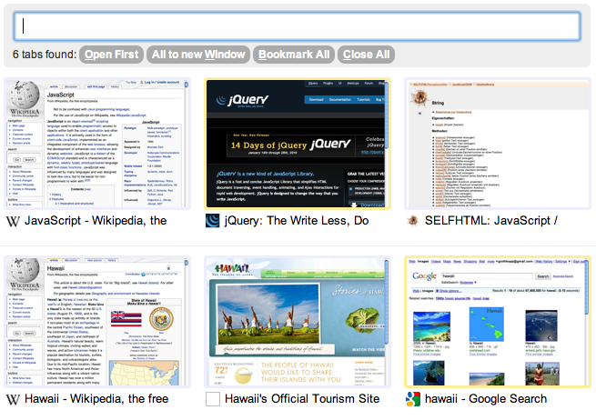

You have just installed the Tabs Plus Extension. Let us give you a short introduction to this extension with a real world example.
1. Tab Chaos
You did some research on Javascript and some planning for your holiday trip to Hawaii.
Now you have a wild mixture of open Tabs. Tabs Plus will help you to sort out that Chaos.
3. Open Tabs Plus
You can open Tabs Plus by clicking the -icon on the right of Chromes adress input or with a keyboard shortcut (Alt-t on Windows, ctrl-shift-t on mac, shift-alt-t on linux).
Tabs Plus will show you thumbnails of all open tabs and you can put them into new order with drag-and-drop. If you click on a thumbnail the corresponding tab will be selected in your browser.
4. Searching
If you enter the text "Hawaii" in the searchbox at the top of the Tabs Plus Window, only the tabs concerning Hawaii will be shown. Tabs Plus performs a live search, as you type the word, you'll notice tabs vanishing with every letter.
The tab with the orange marking is the one you're currently viewing.
5. Grouping of Tabs
After you have searched for Hawaii, you hit the -Button. This will sort all Hawaii-Tabs next to each other.
All buttons are also accessible with keyboard shortcuts (Alt-? on Windows, ctrl-shift-? on mac, shift-alt-? on linux).
6. Multiple Windows
You can also go one step further and click the -Button. Now all the tabs regarding Hawaii will be sent to a new window.
 In Tabs Plus different windows are separated by a thin grey line. The line is this thin, because for Tabs Plus the difference doesn't really matter; searching, sorting and everything else works across all windows.
Now there are two open windows. One with tabs concerning Javascript, the other one with tabs regarding Hawaii. We can now easily switch between these topics by switching windows. But Tabs Plus makes it even easier: if you select a tab from the window that isn't currently in focus, Tabs Plus will change the sets of tabs between the two windows. So the selected topic comes to focus without the need to find the window and resize it.
7. Bookmarking
Tabs Plus can also serve as a lightweight session-manager. If you search for something and hit the -Button Tabs Plus will create a Bookmark-Folder with all found tabs.
The created bookmarkfolder will now appear as a Button underneath the search field. If you click that button the bookmarked Tabs will be opened. You can manage your Tabs Plus bookmarks with the regular Chrome bookmark manager and they will be syncronized when you have activated bookmark syncing in chrome.
8. One more thing
The Tabs Plus search does a fulltext-search in all open tabs. So if you read a about "Moloka'i" a minute ago, but you can't remember in which tab you did so, Tabs Plus will make your day.
We hope we didn't bore you with this tutorial and wish you a pleasant time with Tabs Plus. The number of tabs in this tutorial was very limited and Tabs Plus becomes really usefull once your tab bar looks like this: